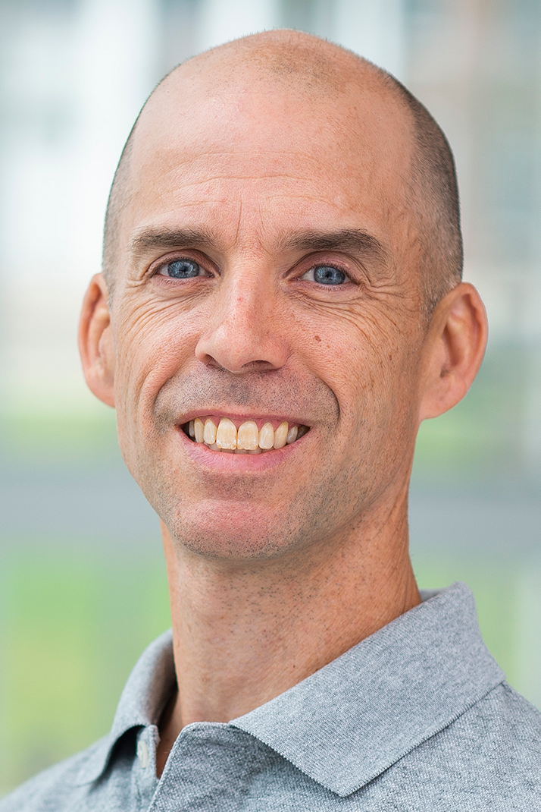
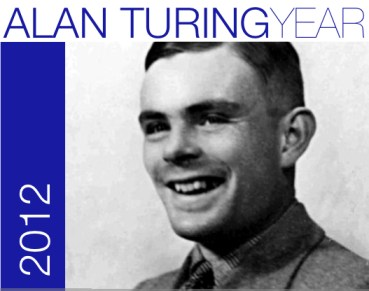

|  |
Michael Hicks |
|
| E-mail: | [point here] | |
| Social: | LinkedIn, Threads and Twitter/X (defunct) | |
| Mastodon: | mastodon.social/@michael_w_hicks | |
| MOOC: | Software
Security (now free) |
|
| Blogs: | PL Enthusiast, PL Perspectives | |
| Publications | ||
{kind=link}
I am an incoming Professor in the Computer and
Information Science Department at the University of
Pennsylania, and an Amazon Scholar. Previously, I
was a Senior Principal Scientist at Amazon
Web Services where I co-led (with Emina
Torlak) development on the Cedar
authorization policy language, which is part
of Amazon
Verified Permissions.
I am also a Professor Emeritus (retired 2022) in the Computer Science Department and UMIACS at the University of Maryland, College Park. With Jeff Foster I founded PLUM, the lab for Programming Languages research at the University of Maryland; David Van Horn and Leo Lampropoulos are its current directors. (You may find it interesting to read about how PLUM is managed.) I am also affiliated with QuiCS and the Maryland Cybersecurity Center (MC2), and was formerly MC2's Director (2011-2013, see our video!). I was Chair (2015-2018) and Past Chair (2018-2021) of ACM SIGPLAN, the Founder (2019) and Editor (until mid-2021) of PL Perspectives, the SIGPLAN blog, and was the CTO of Correct Computation, Inc (2018-2021). I am currently the Editor in Chief of Proceedings of the ACM on Programming Languages (PACMPL).
Here is my current vita and a list of my publications, organized by year and by category.
I received my Ph.D. in Computer and
Information Science from the University of Pennsylvania
in August 2001, and I spent one year as a post-doctoral
associate affiliated with the Information Assurance
Institute of the Computer
Science Department at Cornell University. During
academic 2008 - 2009, I was on sabbatical in Cambridge,
England. From September to November I was at Microsoft
Research and from December to August 2009 I was at
the University of
Cambridge Computer Laboratory. During the Summer of
2015 I visited Microsoft Research in Redmond.
News: My Software
Security on-line class, created in 2015, is
now freely available (originally hosted on Coursera).
How fast
can you type? (My best ever is 108 wpm.)
Research
My primary research interest is to develop and evaluate techniques to improve software availability, reliability, and security. Here is a list of recent projects.
| Secure programming - How do we build
software that is secure? We have been
developing a contest, called build-it,
break-it, fix-it whose aim to
test how well students can build software
securely. We have now offered the contest several
times (including many times in classes at UMD and
elsewhere) and have some interesting
data analysis of what strategies work and
don't work for building and breaking. We are
working on a more
in-depth analysis of contest data. One clear
outcome, previously known but confirmed by the
contest, is that programming in C and C++ is
risky. We have been working on Checked C, an
extension to C aimed to provide safety. Checked
C is specifically designed to ease the porting
of legacy code. We have also been looking at
how to make the safe Rust
programming language easier to use by
incorporating a garbage collector. |
| Fuzz testing - How to
automatically test software to find bugs and
security vulnerabilities? We have looked at
methodologies
for evaluating randomized/fuzz testers (blog
post), and means to combine
coverage-guided fuzzing with property based
testing. We are working on automated
benchmark generation techniques and new algorithms
and frameworks. |
| Quantum computation programming languages
- means to develop reliable and efficient
quantum programs on near-term devices. We
have been applying formal methods toward the goal
of developing a verified compiler stack for
quantum programs, starting with VOQC,
the verified optimizer for quantum circuits
(code link). We also looked at the challenge of
developing high-quality quantum
programs despite limited, noisy resources on
quantum computers available in the near
term. |
| Blending programming languages and cryptography - means of implementing privacy-preserving or integrity-assuring computation through the combination of programming languages and cryptographic techniques. We have looked at languages and analyses for secure multiparty computation, most notably a new programming language called Wysteria, and a follow-on language Symphony. We have also developed novel mechanisms for cloud-based computations involving general-purpose authenticated data structures (blog post) and compiler-optimized oblivious RAM. |
Further in the past, I was involved in the following
projects:
- Kitsune and Rubah frameworks for allowing safe, efficient, and flexible updates to running C and Java code. Also worked on Bullfrog (blog post), a system supporting online schema evolution in Postgres. Earlier work and papers on dynamic updating are described here.
- LWeb,
a novel Haskell-based framework for preventing leaks in
web applications.
- Prob, a tool employing probabilistic abstract interpretation for enforcing quantitative knowledge-based policies that protect static and time-varying secrets, incorporating uses of sampling to improve precision.
- Adapton, a library for incremental computation --- the idea is to write an algorithm largely as usual, but then to derive a version that can incrementally update the output following a small changes to its input.
- Expositor, a library for writing dynamic analyses to assist in debugging, taking advantage of record/replay support.
- Diamondback Ruby, static and hybrid static/dynamic type system for the Ruby scripting language.
- Otter, a symbolic executor for C programs.
- LockSmith, a static analysis tool for proving the absence of race conditions in C programs.
- Path Projection, a browser-based UI toolkit for presenting, navigating, and querying paths emitted as static analysis results; we applied it to Locksmith.
- Cyclone,
a safe dialect of C. Cyclone's system for manual memory
management was influential
in the development of Rust.
- I have also looked at means for customized, language-enforced security policies, implemented in a web programming language, SELinks, and automatically inserted by a compiler called Coco.
- MGRP, for measurement-aware data transport and kernel-based rootkit detection.
Links to all past projects may be found on the PLUM home page.
Research Group
Previous students and postdocs (PhD, unless otherwise annotated):
| Liyi Li (postdoc) | Assistant Professor, Iowa State, since July 2023 |
| Ethan Cecchetti (postdoc) | Assistant Professor, Wisconsin, since July 2023 |
| Michael Coblenz (postdoc) | Assistant Professor, UCSD, since September 2022 |
| Kesha Hietala | Researcher, Sandia National Labs, since October 2024; previously Applied Scientist, Amazon Web Services, July 2022-October 2024 |
| Ian Sweet | Research Engineer, Galois, since July 2022 |
| Yiyun Liu (MS, undergrad) | PhD student, University of Pennsylvania, since September 2021 |
| Leonidas
Lampropoulos (postdoc) |
Assistant Professor, University of
Maryland, since July 2020 |
| Robert Rand
(postdoc) |
Assistant Professor, University of
Chicago, since July 2020 |
| James Parker |
Advanced Language-based Techniques for
Correct, Secure Networked Systems Software research engineer, Galois, since June 2020 (part-time 2019) |
| Andrew Ruef | Tools
and Experiments for Software Security Quantitative Researcher at IDA/CCS February 2019-2021 |
| Chang Liu**** | Trace
Oblivious Program Execution Post-doc at UC Berkeley, 2016-2018; researcher at Citadel Securities since 2019 |
| Shiyi Wei (postdoc) | Associate Professor, University of Texas at Dallas, since August 2017 |
| Aseem Rastogi | Language-based
Techniques for Practical and Trustworthy
Secure Multi-Party Computations Principal Researcher at Microsoft Research India since June 2016 |
| Matthew Hammer (postdoc) | Research scientist at DFinity
2019-2023; previously Assistant Professor, University
of Colorado, Boulder, August 2015-January
2019 |
| Luis Pina*** | Practical
Dynamic Software Updating (for Java) Assistant Professor at University of Illinois, Chicago, starting Fall'19; previously post-doc at George Mason (Aug 2017-19) and Imperial College, London (Mar 2015-Aug 2017) |
| Karla Saur* | Dynamic
Upgrades for High Availability Systems Distributed Systems Engineer, Nvidia DGX Cloud since October 2024; previously a researcher at Microsoft (2018-2024) and Intel Labs (2015-2018) |
| Piotr Mardziel | Modeling,
Measuring, and Limiting Adversary Knowledge Systems Scientist at CMU (previously, post-doc) since June 2016; post-doc at UMD Jan'15 - Jun'16 |
| Nate
Parsons (MS) |
Implementing and Typing a
Core Calculus for Mixed-mode Secure
Multi-party Computations (scholarly paper) Missions software engineer at Planet since 2013; previously, engineer at JHUAPL |
| Khoo Yit Phang* | User-centered
Program Analysis Tools Senior Team Lead at MathWorks since August 2013 |
| Nataliya Guts (postdoc) | Security Solutions Engineer,
Futurae |
| Chris Hayden* | Clear,
Correct, and Efficient Dynamic Software
Updates Senior Software Engineer at Amazon Web Services since Mar. 2020; previously at SocialCode 2015-2019; WaPo Labs/Trove 2012-2015 |
| Ted Smith (undergrad)* | Senior Product Manager,
Mysten Labs, since June 2023; previously at
Hudson River Trading (2022-2023), Bloomberg LP
(2019-2023); and Google (2016-2018); grad
student at UMass Amherst 2013-2016 |
| Stephen Magill (postdoc) | VP, Product Innovation at Sonatype, since 2021; formerly CEO of MuseDev, Principal scientist, Galois, 2014-2020; reearcher at IDA/CCS, 2012-2014 |
| Justin McCann | Automating
Performance Diagnosis in Networked Systems Avere Systems since July 2012 |
| Martin Ma* |
Improving Program Testing and Understanding
via Symbolic Execution Software Engineer at Google since 2013 (previously at Amazon) |
| Saurabh Srivastava* | Satisfiability-based
Program Reasoning and Program Synthesis Founder, Synthetic Minds, since 2017; founder, 20n, 2013-2017; post-doc at Berkeley 2012-2014 |
| Pavlos Papageorgiou | The
Measurement Manager: Modular and Efficient
End-to-end Measurement Services Software Engineer, Google (AI), since December 2008 |
| Iulian Neamtiu | Practical
Dynamic Software Updating Full Prof, NJIT; there since Fall 2015 (at UC Riverside, 2008-2015). |
| Manuel Oriol (postdoc) | President of Constructor
Institute and Professor of Software Engineering,
since 2021; Principal Scientist, R&D manager
at ABB Switzerland Ltd. 2011-2021; Senior Lecturer, University of York (UK), 2008-2014 |
| Polyvios Pratikakis* | Sound,
precise, and efficient static race detection
for multithreaded programs Associate professor in CS, University of Crete, since 2014; researcher, Institute of Computer Science, FORTH, 2010-2014; post-doc at CNRS/VERIMAG 2008-2009 |
| Nikhil Swamy | Language-based
Enforcement of User-defined Security
Policies as Applied to Multi-tier Web
Applications Senior Principal Researcher, Microsoft Research, Redmond, since Fall 2008 |
| Nick L. Petroni** | Property-based
Integrity Monitoring of Operating System
Kernels Chief scientist, Volexity, since 2015; research scientist, IDA/CCS 2008-2015 |
| * co-advised with Jeff Foster | ** co-advised with Bill Arbaugh | *** co-advised with Luís
Veiga |
**** co-advised with Elaine Shi |
I have also worked closely with Kelsey Fulton and Dan Votipka (advised by Michelle Mazurek), Aravind Machiry (PhD student interned at UMD, advised by Giovanni Vigna and Chris Kruegel at UCSB), Niki Vazou (postdoc supervised by David Van Horn), David Darais (advised by David Van Horn), Andrew Miller (co-advised with Jon Katz and Elaine Shi), Avik Chaudhuri, Mike Furr, David An, and Elnatan Reisner (advised by Jeff Foster), Adam Bender (advised by Bobby Bhattacharjee), Jaime Spacco (advised by Bill Pugh), and Suriya Subramanian (advised by Kathryn McKinley while at UT Austin). I have previously advised Willem Wyndham, Jonathan Turpie (now at Amazon), Brian Corcoran (now at Palantir), Eric Hardisty, and James Rose (now at Google). I've also worked with post-grad Patrick Jenkins, undergrad Jeff Meister, and high school students, Ted Smith (from Walt Whitman High), and Yael Pinsky, George Klees, Matt McCutchen, and Cody Burton (from Montgomery Blair). Both Ted and Matt later became undergraduate students at UMD and Ted, Matt, and Cody all went to graduate school (at UMass, MIT CSAIL, and MIT Physics, respectively). I ended up working with Matt at Correct Computation.
Teaching
- CMSC 388N (Build it, Break it, Fix it: Competing to Secure Software), Winter 2020
- CMSC 330 (Organization of Programming Languages) Spring 2021, Spring 2019, Spring 2018, Spring 2017, Fall 2015, Spring 2015, Spring 2013, Spring 2010
- CMSC 631 (Program Analysis and Understanding) Fall 2021, Fall 2017, Spring 2013, Fall 2011, Fall 2009, Fall 2007 and Fall 2006
- CMSC
396H, Honors Research Seminar, Fall 2016
- CMSC 838G Mechanized Proof and Verified Software, Spring 2016
- Software Security, hosted by Coursera, since late Fall 2014
- CMSC 838G (Software Security) Spring 2014 and Spring 2011
- CMSC 433 (Programming Language Technologies and Paradigms) Fall 2014, Fall 2013, Fall 2010, Spring 2006, Fall 2003, Fall 2002
- CMSC 498L (Cybersecurity Lab), Fall 2012
- CMSC 498B (Secure Maryland - pen testing), Spring 2012
- CMSC 412 (Operating Systems) Spring 2007, Fall 2005, Fall 2004
- CMSC 838Z (Language-Based Security) Spring 2005
- CMSC 838Z (Tools and Techniques for Software Dependability) Spring 2004
- CMSC 838Y (Agile and Adaptive Programming Systems) Spring 2003
Professional Activities
I was the Chair (2015-2018) and Past Chair (2018-2021) of ACM SIGPLAN; I was the Steering Committee Chair for POPL (2018-2021); Founder and Editor of PL Perspectives, the SIGPLAN blog (2019-2021); an Associate Editor for TOPLAS (2012-2016); and I have served (or am serving) on the following committees
| 2025 | CSF, OOPSLA, S&P | ||
| 2024 | POPL | ||
| 2023 | PLDI (Area Chair), PACMPL (Editor in Chief, til Nov 2025) | ||
| 2022 | S&P | ||
| 2021 | PLDI, OOPSLA, ASPLOS (ERC) | ||
| 2020 | PLanQC (co-organizer), PLDI (ERC) | ||
| 2019 | POPL
SRC, ASPLOS
(ERC), SNAPL,
CCS
(Area Chair), SecDev |
||
| 2018 | POST, S&P (Area Chair), SecDev | ||
| 2017 | S&P, ESSoS, CCS, USENIX ASE, SecDev | ||
| 2016 | PLDI,
CSF
(PC co-chair), USENIX
ASE, SecDev
(PC chair), CSAW
judge |
||
|---|---|---|---|
| 2015 | S&P, CSF (PC co-chair), SNAPL | ||
| 2014 | OBT, CSF, OOPSLA/SPLASH | ||
| 2013 | POPL (ERC), PLDI | ||
| 2012 | POPL (PC chair), HotSWUp | ||
| 2011 | TLDI, HotSWUp (co-organizer), OOPSLA | ||
| 2010 | ESOP, PLDI (ERC and tutorials chair), ICFP (PC and local arrangements), PASTE | ||
| 2009 | POPL, S&P, PLDI SRC | ||
| 2008 | CCS, CATARS, COORDINATION, ISMM (ERC) | ||
| 2007 | PLAS (general and PC chair), OOPSLA, COORDINATION, PLDI | ||
| 2006 | FTfJP, PLAS, SPACE, OOPS (part of SAC 2006) | ||
| 2005 | SCOOL, VEE | ||
| 2004 | IWAN, ICPP, FUSE | ||
| 2003 | IWAN, USE | ||
| 2002 | IWAN, USE | ||
| 2001 | IWAN | ||
|  | 
|